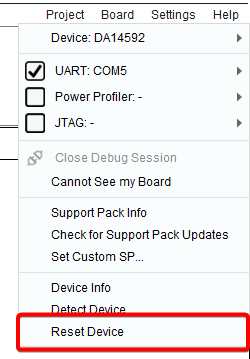

10. Troubleshooting¶
10.1. Error “2nd stage bootloader rejected (-105)” on Connect or Booter¶
Should the following messages Could not connect to device. read from QSPI failed: 2nd
stage bootloader rejected (-105) been noticed while executing SmartSnippets Toolbox
commands, using the UART interface on a Basic DK, please follow the next steps to resolve the
issue.
Step 1 : Install SEGGER Jlink v6.12i or later and Run JLink Configurator
Step 2 : Right click on the Jlink product detected and update firmware (if needed) Right click on the Jlink product detected and select “Configure”. In the pop up window select “Enable” in the Virtual Com Port options
Step 3 : Start J-Link Commander –> Confirm the firmware update Enter “wconf 0x8E 0xFB” in order to change the TX drive behavior Power-Cycle the hardware in order to apply the change
10.2. Error message on not supporting ARMv8-M architecture¶
This appeared on DA1469x but may appear on other families too. User tries to open a connection with JTAG and the following message occur:
Figure 159 Error connecting with JTAG
If user press OK Toolbox opens with errors reading specific addresses.
- Close SmartSnippets Toolbox application
- From command prompt move into JLink installation folder and run JLink executable (JLink.exe for windows)
- A popup message requesting firmware update should occur.
- Press yes to proceed with firmware upgrade
- Close command prompt and try to connect with Toolbox again.
10.3. Warning on CLI interface running from windows: WARNING: Could not open/create prefs root node Software\JavaSoft\Prefs at root 0x80000002. Windows RegCreateKeyEx…¶
This is a known Java issue https://bugs.java.com/bugdatabase/view_bug.do?bug_id=6790382
It does not affect the SmartSnippets™ Toolbox functionality.
However, to get rid of this warning the user can follow these steps:
- From Start Menu type regedit into the run search field.
- Navigate to path HKEY_LOCAL_MACHINE\Software\JavaSoft (on Windows 10 the path seems to be here: HKEY_LOCAL_MACHINE\Software\WOW6432Node\JavaSoft)
- Right click on the JavaSoft folder and click on New -> Key
- Name the new Key Prefs
10.4. Firmware file in Hex format does not start running when downloading to the board¶
SmartSnippets™ Toolbox has its own hex file parser to convert .hex files into binaries before download then to the board.
If this fails try to download the .bin version of the firmware or convert .hex to .bin with the hex2bin utility available in installation folder e.g. C:\DiaSemi\SmartSnippetsStudio2.0.11\Toolbox\common_resources\firmware_upload\hex2bin.exe or C:\Program Files (x86)\SmartSnippetsToolbox\SmartSnippetsToolbox5.0.10\common_resources\firmware_upload\hex2bin.exe
10.5. Error message during verification after erase or burn¶
Check that end address do not exceed real physical memory length.
10.6. Timeout error when working with large flash memory on JTAG¶
Tool uses a default timeout value of 10000ms when waiting for a response from the board on JTAG communication.
This value is enough for e.g. a 8Mbit flash size. When working with larger flash increase timeout by editing
file C:\Users\<user>\SmartSnippetsToolbox\properties.txt.
Add the following lines.
JTAG_READ_TIMEOUT = 50000 JTAG_WRITE_TIMEOUT = 50000
A value of 50000 should be enough for a 32Mbit flash size. After changes, restart application.
10.7. Flash Code / Flash Data : Content read is 0x00¶
If Flash Code tool or Flash Data tool returns 0x00 instead 0xFF (empty memory on most devices) or user data try the following:
Open Board Setup tool and check SPI Flash pin configuration
From the main menu select Board → Reset Device. This command will reset the device using JTAG interface. Afterwards press the connect button again.
Figure 160 Reset device
Power cycle the board. Remove the board’s USB cable from host and plug in again.